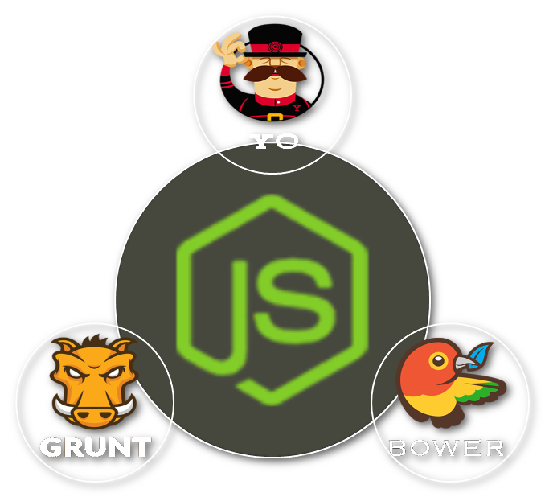

follow along...
www.goo.gl/GFz6k0
Rapid Development
with the AngularJS ecosystem
What We'll Cover
AngularJS Basics
|
|
Why Use Angular? | Demo
There are lots of JavaScript MVC(ish) frameworks out there, but AngularJS combines
- A declarative user interface
- Models are simple objects (no getter/setter)
- Promotes good coding standards
- Unit testing ready
- Write less code!
Hello {{yourName}}!
Dependency Injection
De-couple code, increase reusability, and promote unit-testing with Angular's Di.
// Controller with a dependency on '$log' and '$injector'.
var MyController = function($log, $injector){
$log.info('Hello World');
var log = $injector.get('$log');
log.info('I\'m the same logger');
};
// Minified code breaks Angular's Di.
var MyController = function(a, b) { // Angular's injector doesn't know 'a' or 'b'
a.info('Hello World');
var c = b.get('$log');
c.info('I\'m the same logger');
};
// The solution:
var MyController = ['$log', '$injector', function (a, b) {
a.info('Hello World');
var c = b.get('$log');
c.info('I\'m the same logger');
}];
Structure | Demo
Directives | Demo
angular.module('myApp').directive('greeter', function () {
return {
restrict: 'EA',
replace: true,
template: '' +
'' +
'' +
'
' +
'Hello {{yourName}}!
' +
'',
link: function(){
}
};
});
Filters | Demo
// Turn 'hello world' into 'Hello World'.
angular.module('myApp').filter('capitalize', function () {
return function (input) {
var words = input.split(' ');
angular.forEach(words, function (word, i) {
words[i] = words[i].charAt(0).toUpperCase() + words[i].slice(1);
});
return words.join(' ');
};
});
Services | Demo
// Services return static objects or functions.
angular.module('myApp').service('stringUtil', function() {
return {
// stringUtil.format('{0} {1}', 'foo', 'bar'); => 'foo bar'
format: function(str, args) {
// Remove the first argument cause its the string reference.
args = Array.prototype.slice.call(arguments);
args.shift();
// Replace all the tokens based on the input arguments.
return str.replace(/{(\d+)}/g, function(match, number) {
return typeof args[number] !== 'undefined' ? args[number] : match;
}
}
}
});
AngularJS Ecosystem
|  |
Node.js is a platform built on Chrome's JavaScript runtime for easily building fast, scalable network applications. Node.js uses an event-driven, non-blocking I/O model that makes it lightweight and efficient, perfect for data-intensive real-time applications that run across distributed devices.

Node Package Manager (NPM) is the NuGet for NodeJS. It runs through the command line and manages application dependencies. NPM comes bundled with Node.js.
-- Install the "socket.io" package, and it's dependencies, in a specific directory:
cd c:/projects/
npm install socket.io
-- Install the "socket.io" package, and it's dependencies, globally:
npm install socket.io -g
-- socket.io is now available globally on your machine.
BowerA package manager for the web |
Bower is NuGet for the web. It is a package manager, which handles dependencies, for web components.
-- Install the "bower" package, and it's dependencies, globally:
npm install bower -g
-- Download the 'jquery' project to the 'bower_components' directory:
cd c:/projects/my-project
bower install jquery
|
|
The JavaScript Task RunnerIn one word: automation. Grunt runs tedious tasks for you so you can sit back, relax, and drink your coffee. |
-- Install the "grunt" package, and it's dependencies:
npm install grunt
-- Install the "copy" task, and it's dependencies:
npm install grunt-contrib-copy
// Gruntfile.js:
grunt.initConfig({
copy:{
dist: {
files: [{
dest: '<%= myConfig.dist %>/scripts',
src: ['src/**/*.js']
}]
}
}
});
|
|
Modern Workflows for Modern Web AppsYeoman scaffolds out new applications and generates boilerplate code for you. |
-- Install the "yeoman" package, and the angular generator:
npm install yo -g
npm install generator-angular -g
-- Tell Yeoman to generate an angular application for you:
yo angular
-- Tell Yeoman to generate a route (and controller and view) for you:
yo angular:route myroute
Rapid Development
The ability to effectively reuse code with little effort
- Need decoupled code Dependency Injection
- Need good organization Modules
- Need reliable code Unit Tests
- Need good documentation Automated Docs
Design For Reusability
- Separate functionality into modules
- Create the API before writing any code
- Mimic successful projects (angular-bootstrap | angular-ui)
Piece It Together
Consume angular modules and piece them together, like legos, to create completely new functionality.